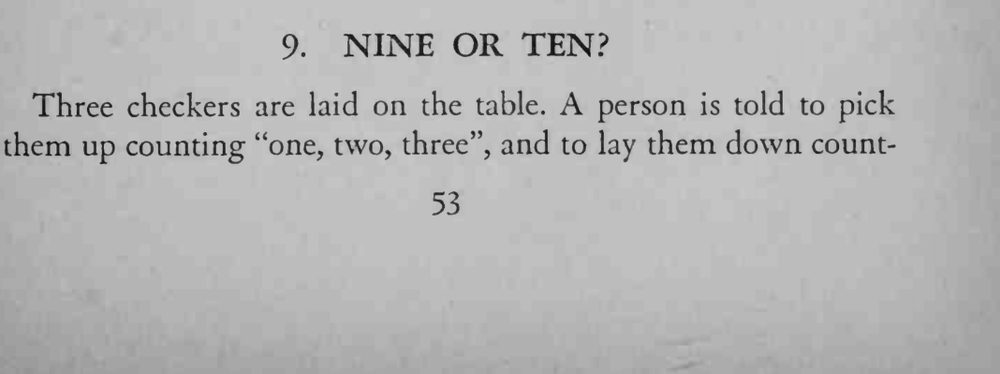
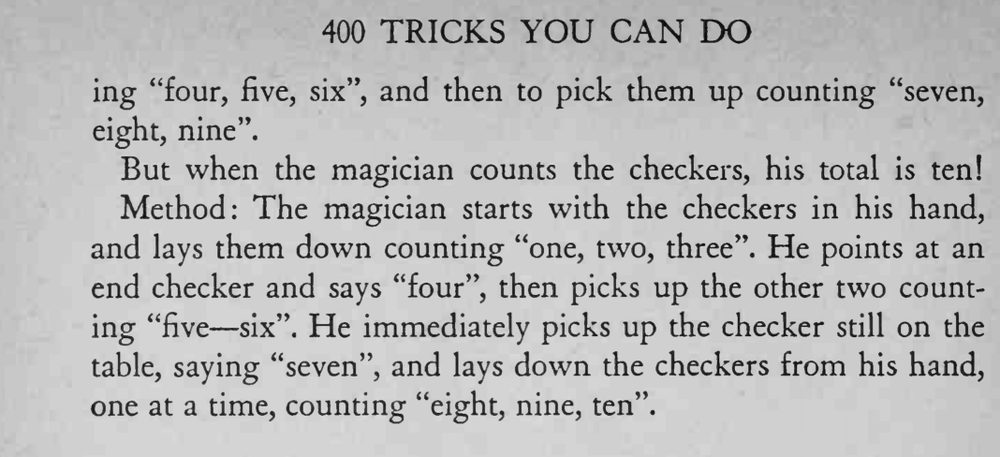

同样三枚棋子，观众数来数去只有九，魔术师却能数出十枚。
嘴里数「四」时只用手指点、不拿起棋子，动作要连贯自然。


Three checkers are laid on the table. A person is told to pick them up counting "one, two, three", and to lay them down count- ing "four, five, six", and then to pick them up counting "seven, eight, nine'*. But when the magician counts the checkers, his total is ten! Method: The magician starts with the checkers in his hand, and lays them down counting "one, two, three". He points at an end checker and says "four", then picks up the other two counting "five six". He immediately picks up the checker still on the table, saying "seven", and lays down the checkers from his hand, one at a time, counting "eight, nine, ten".